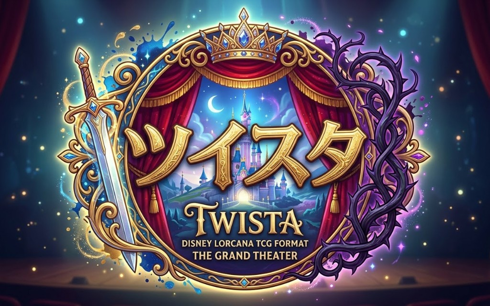

非公式フォーマット
ディズニーロルカナ「ツイン・スターリング」基本ルール
Disney Lorcana TCG Format
「自分だけのミュージカル映画の上演を目指す」ことをコンセプトにした、 ディズニーロルカナの多人数戦フォーマットです。
ツイスタとは
ツイン・スターリング（ツイスタ）は、2体の主演キャラクターと1枚の主題歌を決め、 それらを中心としたデッキを組んで遊ぶ多人数戦です。 選出した3枚は「ストーリーボード」と呼びます。
ツイスタは主にプレイヤー同士の交流を目的として遊ぶ方法となっています。 ルールの制定に際しては、ディズニーロルカナのデザインの元となったTCG 「マジック：ザ・ギャザリング」の人気フォーマット「統率者」を参考にしました。
基本ルール
まず各プレイヤーは、主演キャラクター2枚と主題歌1枚をストーリーボードとして決めます。 その後、ストーリーボードを軸にデッキを構築して対戦を行います。
デッキの構成
- 主演に設定するキャラクター・カード2枚
- 主題歌に設定するアクション・歌・カード1枚
- その他カード57枚以上
- 各カード1枚ずつのみ使用可能
- 主演キャラクターと主題歌の同色インク（最大3種類）のカードが使用可能
ゲームの進行
- 各プレイヤーはストーリーボードのカードをデッキに混ぜず、提示しておく
- 開始プレイヤーを決め、手札を決定させる
- 開始プレイヤーもスタートフェイズのドローを行う
- ターン進行は時計回りに行う
- ストーリーボードのカードをすべてプレイし、一番最初に25ロアを獲得したプレイヤーが勝利
更新履歴
- 2026/04/06 - 初版ページを作成
- 2026/04/06 - ロルカナ統率者風フォーマット向けに文言更新
- 2026/04/06 - ツイン・スターリングの概要と基本ルールを反映